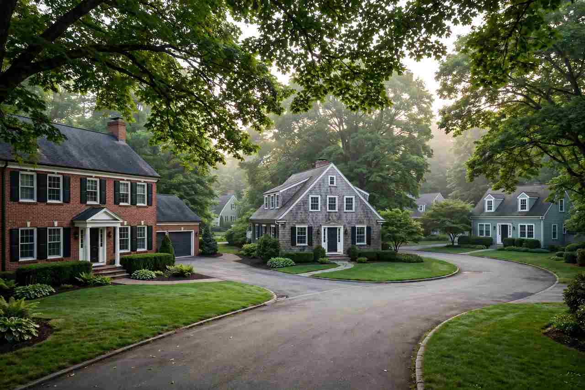

Rodent Control · Watchung, NJ
Licensed Rodent Control in Watchung, NJ
Murvo delivers same-day rodent control in Watchung for rats and mice in attics, walls, kitchens, and crawl spaces. Local crews start with a thorough inspection, then remove, exclude, and monitor until the problem is solved. You approve one flat-rate price in writing before any work starts, and every job carries a written guarantee across Somerset County.
24/7Availability
1ZIP codes covered
Same-dayResponse
Licensed · Upfront options · Written guarantees · Fully insured
Watchung at a glance
Local Rodent Control for Watchung, NJ.
Somerset County
Countynorthern New Jersey
RegionElizabeth · 13 mi
Nearest metro34 miles northeast of Trenton
From Trenton1
ZIP codes covered Service by service in Watchung
Rodent Control Services Available in Watchung
Rodent-only specialists serving Watchung and Somerset County. Every service below is explained in local terms - the species involved, the entry points that matter in pre-war rowhomes, brownstones, triple-deckers, and older single-family homes, and the seasonal timing that decides whether a fix lasts.
- 01Rodent Control↗
- 02Rodent Inspection↗
- 03Rodent Removal↗
- 04Rodent Exclusion↗
- 05Rodent Proofing↗
- 06Rat Control↗
- 07Mice Control↗
- 08Mouse Removal↗
- 09Rat Removal↗
- 10Rodent Trapping↗
- 11Rodent Baiting↗
- 12Rodenticide Application↗
- 13Attic Rodent Removal↗
- 14Crawl Space Rodent Removal↗
- 15Wall Rodent Removal↗
- 16Kitchen Rodent Control↗
- 17Garage Rodent Control↗
- 18Commercial Rodent Control↗
- 19Residential Rodent Control↗
- 20Emergency Rodent Removal↗
- 21Same-Day Rodent Control↗
- 22Rodent Damage Repair↗
- 23Rodent Waste Cleanup↗
- 24Rodent Disinfection↗
- 25Rodent Odor Removal↗
- 26Dead Rodent Removal↗
- 27Rodent Dropping Cleanup↗
- 28Rodent Exclusion for Roofs↗
- 29Rodent Exclusion for Vents↗
- 30Rodent Exclusion for Chimneys↗
Rodent Control in Watchung
Rodent Control in Watchung
Most Watchung calls start with a sound nobody can place, then droppings confirm what the noise suggested. Murvo treats rodent control as a sequence, not a single visit: find the species, clear what is inside, close what let it in. Before any work begins, you approve a flat-rate written quote.
In Watchung, rodent control is not a generic spray-and-go service. Rodents exploit basement foundations, sewer and pipe chases, shared party walls, and alley-facing garage and door seals in pre-war rowhomes, brownstones, triple-deckers, and older single-family homes, and a fix that ignores those routes does not last. Murvo's Watchung team inspects first, shows you the evidence - droppings, gnaw marks, entry gaps - and then lays out the work with a flat-rate written quote. We serve all of Somerset County from Watchung, including North Plainfield, Plainfield, and every job is covered by our written workmanship guarantee. Coverage for rodent control spans 1 ZIP codes in Somerset County, including .
We start by identifying whether Norway rat (Rattus norvegicus), House mouse (Mus musculus), or both are active, because each species nests, feeds, and travels differently. Nothing is sealed while animals remain inside. Traps are placed on proven runways along walls, beams, and pipe runs, checked on schedule, and adjusted as catches change. Once numbers fall, exclusion sealing closes the route back in, droppings and nesting debris are removed hygienically, and follow-up monitoring checks the attic, crawl space, and kitchen until readings stay clear. That order protects your home.
When you call, tell us what you have seen and when the noises happen. Once you approve, trapping and sealing are booked in sequence, monitoring is scheduled, and the guarantee is left with you in writing at completion. That detail shapes the first visit. Your technician arrives as scheduled, inspects, and lays out findings before quoting. Keep the visit notes we leave behind; together they form a clear record of findings, approvals, completed work, and the monitoring results that closed the job.
In most of Watchung, we can offer a same-day appointment for rodent control, and our lines are open 24/7 for urgent cases like scratching in the walls or a rodent in a living area. Your technician inspects first, explains the plan, and quotes a flat rate in writing before any work begins, so help starts fast without surprises. If you are seeing signs now, an inspection this week is the fastest way to know which situation you are in.
The honest answer is that it depends on species, activity level, and how much sealing your home needs, which is why Murvo inspects first and then gives you a flat-rate quote in writing. For national context only, Angi's 2026 data averages rat and mouse removal and control at $396, typically $189 to $655; that is not a Murvo price, and your written quote is the figure you pay.
Rodent Inspection in Watchung
Rodent Inspection in Watchung
Most Watchung inspections start with uncertainty: a noise, a smell, a few droppings that might be old. Murvo turns that uncertainty into a written record. A rodent inspection checks attic, crawl space, roofline, and foundation, photographs the evidence, and ends with a flat-rate written quote for anything worth fixing.
In Watchung, rodent inspection is not a generic spray-and-go service. Rodents exploit basement foundations, sewer and pipe chases, shared party walls, and alley-facing garage and door seals in pre-war rowhomes, brownstones, triple-deckers, and older single-family homes, and a fix that ignores those routes does not last. Murvo's Watchung team inspects first, shows you the evidence - droppings, gnaw marks, entry gaps - and then lays out the work with a flat-rate written quote. We serve all of Somerset County from Watchung, including North Plainfield, Plainfield, and every job is covered by our written workmanship guarantee. The Watchung crews who handle rodent inspection also handle the follow-through - proofing, cleanup, and monitoring - so one visit can close the whole problem.
Think of the inspection as three passes. The review pass brings it together: species, likely numbers, contamination, and the order in which fixes should happen. Each pass is photographed, and nothing is recommended without evidence from one of those passes to support it. The exterior pass checks siding, vents, pipe entries, and roof junctions for gaps and rub marks. The interior pass covers attic insulation, crawl-space corners, and kitchen voids for droppings, nests, and gnawing. The report separates what rodents are doing now from what the structure merely allows them to do later.
After booking, we confirm your time window by text or call. Before leaving, they review photos and priorities with you, leave the written findings, and schedule any follow-up work you approve. On arrival, your background-checked technician checks in, protects floors and access points, and works through a set inspection checklist inside and out. The inspection itself is backed by licensed, insured service and our written workmanship guarantee on quoted work.
You do not have to wait days for answers in Watchung. Same-day rodent inspection appointments are available in most areas, urgent calls are taken 24/7, and most home inspections take under an hour. You finish the visit with photos, written findings, and flat-rate pricing for anything we recommend. In Somerset County, most cases involve the Norway rat (Rattus norvegicus) and the House mouse (Mus musculus), so the inspection focuses on their routes first.
Nationally, a professional rodent inspection typically runs $100 to $200 according to Angi's 2026 data, and it is often credited toward the job if you proceed. Murvo confirms your exact rodent inspection price before the visit and quotes any follow-up work as a flat rate in writing after inspection, so the figure you approve is the figure you pay, with no hourly billing.
Rodent Removal in Watchung
Rodent Removal in Watchung
In pre-war rowhomes, brownstones, triple-deckers, and older single-family homes, removal fails when it ignores how rodents actually live: close to food, water, and undisturbed cover near basement foundations, sewer and pipe chases, shared party walls, and alley-facing garage and door seals. Our rodent removal in Somerset County starts by mapping that daily pattern, then removes animals room by room, including attics and garages, until monitoring, not optimism, says the home is clear.
When you need rodent removal in Watchung, the job starts with what is actually happening in your part of Somerset County. Murvo crews work Watchung every week, so they know how Norway rat (Rattus norvegicus) and House mouse (Mus musculus) behave around pre-war rowhomes, brownstones, triple-deckers, and older single-family homes here - and where they get in: basement foundations, sewer and pipe chases, shared party walls, and alley-facing garage and door seals. We arrive equipped for the full job, confirm the flat rate in writing before work begins, and cover the whole Watchung area, including North Plainfield, Plainfield. No call-center runaround and no open-ended hourly billing - just a local crew, a clear plan, and a written quote you approve first. Around New Providence, Millington, North Plainfield, the pattern is similar: House mouse (Mus musculus) finds basement foundations, sewer and pipe chases, shared party walls, and alley-facing garage and door seals first, and lasting rodent removal has to close those routes.
We favor trap-based, no-poison removal first where practical, which is safer around children and pets and avoids animals dying in hidden voids. Traps are matched to the species and setting, placed where droppings and rub marks show real travel routes, then cleared and reset until numbers reach zero. Dead animals in inaccessible places are located and retrieved before odor develops, contaminated nesting material is removed, and sealing recommendations are prioritized so the route indoors closes permanently. Monitoring then confirms the home stays clear.
Once removal is underway, expect short, predictable visits. Your technician checks each mapped trap, removes catches hygienically, resets what is still needed, and updates the record with you. When catches reach zero, monitoring confirms it, sealing is discussed, and the job closes with a walkthrough and your guarantee paperwork in hand before we leave. At close, prevention advice is tailored to what actually attracted rodents to your property, not copied from a generic checklist.
When rodents are active indoors in Watchung, waiting rarely helps. Rodent removal can usually start the same day you call, our line answers 24/7 for a rodent loose in a living area, and the first visit sets traps straight away. Scheduled returns then clear and reset them until monitoring shows the home is clear. In Somerset County, activity follows the local season, so timing the work matters as much as the method.
Cost depends on the species, how many animals are active, and how much sealing the home needs afterwards, so Murvo inspects first and quotes one flat rate in writing. For national context only, Angi's 2026 data averages rat and mouse removal at $396, typically $189 to $655. That benchmark is not a Murvo price; your written quote is the exact figure.
Rodent Exclusion in Watchung
Rodent Exclusion in Watchung
Trapping alone only buys time if rodents can walk straight back in. Rodent exclusion in Watchung is the permanent fix: a full entry-point survey, then sealing with materials rodents cannot gnaw through. Murvo clears active animals first so none are sealed inside, gives one flat-rate written quote before work starts, and guarantees the workmanship on every seal installed.
In Watchung, rodent exclusion is not a generic spray-and-go service. Rodents exploit basement foundations, sewer and pipe chases, shared party walls, and alley-facing garage and door seals in pre-war rowhomes, brownstones, triple-deckers, and older single-family homes, and a fix that ignores those routes does not last. Murvo's Watchung team inspects first, shows you the evidence - droppings, gnaw marks, entry gaps - and then lays out the work with a flat-rate written quote. We serve all of Somerset County from Watchung, including North Plainfield, Plainfield, and every job is covered by our written workmanship guarantee. In Watchung, rodent exclusion calls most often involve pre-war rowhomes, brownstones, triple-deckers, and older single-family homes, where basement foundations, sewer and pipe chases, shared party walls, and alley-facing garage and door seals decide whether the fix holds.
Before any sealing, active rodents are cleared with trapping so nothing is trapped inside the structure. Because exclusion removes the route in rather than relying on chemicals, it reduces the need for rodenticides and supports pet-safe, no-poison control. A final walkthrough shows you every protected opening, and monitoring checks confirm no new activity appears at sealed points. We then work opening by opening around basement foundations, sewer and pipe chases, shared party walls, and alley-facing garage and door seals, rooflines, and utility penetrations, photographing each finished seal. Every seal is listed on your written guarantee.
After booking rodent exclusion in Watchung, your technician first surveys the whole exterior and confirms which openings are active. You receive a flat-rate written quote listing each seal before work starts. Sealing is then completed opening by opening, photographed as we go, and finished with a walkthrough together. Follow-up monitoring is arranged, and every seal is covered by the written workmanship guarantee. No opening is sealed without being shown to you first.
The first step is a survey, and in Watchung we can often schedule that survey the same day you call about rodent exclusion. Sealing follows once active animals are cleared — nothing is ever sealed inside — and most homes are fully sealed within days, with entry points near wiring or food areas handled first. That is also why Murvo pairs removal with exclusion in Watchung - treating the animal without closing basement foundations, sewer and pipe chases, shared party walls, and alley-facing garage and door seals rarely lasts.
After the survey of your Watchung home, every opening that needs sealing is listed and priced as one flat-rate written quote, so you pay only for the work your property needs. For national context, Angi's 2026 data puts basic exclusion at $200 to $600 depending on access and the number of openings; that benchmark is not a Murvo price.
Rodent Proofing in Watchung
Rodent Proofing in Watchung
As colder weather approaches Somerset County, rodents actively hunt for warm indoor shelter, and unsealed homes are found fast. A Murvo rodent proofing survey checks the roofline, vents, utility entries, and doors before that rush begins. Because proofing prevents infestations instead of reacting to them, it reduces reliance on baits and is backed by our written workmanship guarantee.
When you need rodent proofing in Watchung, the job starts with what is actually happening in your part of Somerset County. Murvo crews work Watchung every week, so they know how Norway rat (Rattus norvegicus) and House mouse (Mus musculus) behave around pre-war rowhomes, brownstones, triple-deckers, and older single-family homes here - and where they get in: basement foundations, sewer and pipe chases, shared party walls, and alley-facing garage and door seals. We arrive equipped for the full job, confirm the flat rate in writing before work begins, and cover the whole Watchung area, including North Plainfield, Plainfield. No call-center runaround and no open-ended hourly billing - just a local crew, a clear plan, and a written quote you approve first. The Watchung crews who handle rodent proofing also handle the follow-through - proofing, cleanup, and monitoring - so one visit can close the whole problem.
Proofing starts with a whole-property assessment inside and out, from overhanging branches and cluttered garages to unsealed vents and gaps under doors. Every item is prioritized so essential work happens first. The plan typically combines structural sealing of utility entries and foundation cracks with mesh screening on vents, chimneys, and rooflines, plus door sweeps where light shows underneath. We also address attractants: securing pet food and bird seed storage, trimming vegetation away from walls, and clearing harborage. Photos show each weakness we find.
Book a rodent proofing survey in Watchung and we will arrange a visit time that suits your household, often the same day. You receive a flat-rate written quote separating essential from optional work. Approved sealing is completed cleanly, then a seasonal re-check is scheduled. Your technician walks the property with you, photographs weak points, and explains the plan in plain language. The finished work is fully guaranteed in writing by Murvo.
Proofing is planned work rather than an emergency, but you can still move fast: rodent proofing surveys in Watchung are often available the same day and always within a few days. Once you approve the plan, most work is finished in a single visit, ideally before colder weather drives rodents indoors. In Somerset County, most cases involve the Norway rat (Rattus norvegicus) and the House mouse (Mus musculus), so the inspection focuses on their routes first.
For national context, Angi's 2026 data puts exclusion, the core of proofing, at $200 to $600 for basic work. That figure is a benchmark, not a Murvo price. After surveying your Watchung property, we separate quick homeowner wins from specialist sealing and quote the professional work as one flat rate in writing, so you can stage spending sensibly.
Rat Control in Watchung
Rat Control in Watchung
Most Watchung rat calls start with evidence in the attic: droppings too large for mice, greasy rub marks, insulation tunneled overnight. Murvo identifies whether Norway rat (Rattus norvegicus) or House mouse (Mus musculus) is responsible, maps nightly routes, and builds control around trapping and exclusion. One flat-rate written quote is approved before work begins.
When you need rat control in Watchung, the job starts with what is actually happening in your part of Somerset County. Murvo crews work Watchung every week, so they know how Norway rat (Rattus norvegicus) and House mouse (Mus musculus) behave around pre-war rowhomes, brownstones, triple-deckers, and older single-family homes here - and where they get in: basement foundations, sewer and pipe chases, shared party walls, and alley-facing garage and door seals. We arrive equipped for the full job, confirm the flat rate in writing before work begins, and cover the whole Watchung area, including North Plainfield, Plainfield. No call-center runaround and no open-ended hourly billing - just a local crew, a clear plan, and a written quote you approve first. Coverage for rat control spans 1 ZIP codes in Somerset County, including .
Wary rats punish rushed trapping, so the program begins with patience. Only then are traps set, checked frequently, and repositioned as the pattern shifts. Catches are recorded by location, giving a clear picture of colony size and movement. Exclusion follows at rooflines and entry points, and monitoring devices remain in place afterwards to verify that quiet routes have genuinely stayed quiet. Unset traps are placed on confirmed runways and pre-baited until feeding becomes confident and regular. Counts matter here, because a falling catch trend tells a different story from a single lucky night.
Call for rat control in Watchung and we will book an inspection, often the same day for active problems. Trapping visits then run on a set schedule, with placements adjusted as activity shifts. The job closes only when monitoring confirms rats are gone and exclusion is complete. Your technician maps routes and harborage, explains the trapping plan, and gives you a flat-rate written quote before any work begins. Your guarantee is confirmed in writing.
Rats do not wait, and neither do we: rat control in Watchung can usually start with a same-day inspection, and urgent calls are answered 24/7. Pre-baiting begins on the first visit once you approve the written quote, traps are set as soon as rats are feeding confidently, and scheduled checks keep the program moving until activity stops. The written quote for your Watchung property will spell out exactly which of these applies before any work starts.
Species, colony size, and the number of entry points to seal all affect rat work, which is why Murvo inspects first and quotes one flat rate in writing. Angi's 2026 figures, given for national context only, average rat control and removal at $396 and typically run $189 to $655; the written quote for your Watchung home is the exact price.
Mice Control in Watchung
Mice Control in Watchung
Mice slip into pre-war rowhomes, brownstones, triple-deckers, and older single-family homes in Watchung through basement foundations, sewer and pipe chases, shared party walls, and alley-facing garage and door seals and settle near warmth and food: behind appliances, inside attic voids, and along pipe runs. Because they investigate new objects quickly, clustered traps work fast when placed correctly. Our licensed, insured technicians also advise on food storage and scent-trail cleaning, then confirm with follow-up visits that activity has genuinely stopped.
Homeowners in Watchung call Murvo for mice control because the problem here is specific: Norway rat (Rattus norvegicus) pressure around pre-war rowhomes, brownstones, triple-deckers, and older single-family homes, tight access at basement foundations, sewer and pipe chases, shared party walls, and alley-facing garage and door seals, and activity that follows the local season. Our Somerset County crews diagnose the real source before recommending work, explain the options in plain language, and quote one flat rate in writing. Across Watchung - including North Plainfield, Plainfield - every visit is backed by licensed, insured technicians and our written workmanship guarantee. Around New Providence, Millington, North Plainfield, the pattern is similar: House mouse (Mus musculus) finds basement foundations, sewer and pipe chases, shared party walls, and alley-facing garage and door seals first, and lasting mice control has to close those routes.
Hygiene is part of control, not an afterthought. Technicians also review how food, pet supplies, and bird seed are stored, since an open supply restarts activity quickly. The program favors traps over bait throughout, which keeps family kitchens safer and makes every result countable and visible. Droppings in cabinets are never dry-swept; surfaces are disinfected first, following careful practice, so contamination is not pushed into the air, and nesting debris is bagged and removed. Follow-up monitoring then verifies the kitchen, attic, and voids together, rather than treating each room in isolation.
Book with one call and tell us which rooms show signs; same-day surveys are often possible. Your technician inspects kitchen, attic, and voids, explains the route map, and quotes in writing before traps are set. Check visits are scheduled immediately, and each one reports catches plainly until the final confirmation visit shows activity has stopped. The final confirmation matters, because mice can go quiet briefly while a nest remains, and monitoring distinguishes quiet from genuinely finished.
Mice multiply fast, so mice control in Watchung is built to start fast too: a survey can often be arranged the same day you call, with traps set on that first visit once the quote is approved. Because mice investigate new objects quickly, catches usually begin soon after, and check visits follow until a final confirmation shows activity has stopped. A Watchung inspection confirms it on site - dropping size, gnaw marks, and entry points tell the story quickly.
The number of rooms affected and the amount of sealing required set the price, so Murvo surveys first and quotes one flat rate in writing. For national context only, Angi's 2026 data averages rat and mouse control and removal at $396, typically $189 to $655 — not a Murvo price; your written quote is exact.
Mouse Removal in Watchung
Mouse Removal in Watchung
What does proper removal include beyond the traps themselves? Hygienic clearing of droppings and nesting, disinfection of affected cabinets, and sealing that stops the next mice using the same scent trails. Murvo delivers that complete finish with licensed, insured technicians and a written workmanship guarantee on the completed work.
Homeowners in Watchung call Murvo for mouse removal because the problem here is specific: Norway rat (Rattus norvegicus) pressure around pre-war rowhomes, brownstones, triple-deckers, and older single-family homes, tight access at basement foundations, sewer and pipe chases, shared party walls, and alley-facing garage and door seals, and activity that follows the local season. Our Somerset County crews diagnose the real source before recommending work, explain the options in plain language, and quote one flat rate in writing. Across Watchung - including North Plainfield, Plainfield - every visit is backed by licensed, insured technicians and our written workmanship guarantee. In Watchung, mouse removal calls most often involve pre-war rowhomes, brownstones, triple-deckers, and older single-family homes, where basement foundations, sewer and pipe chases, shared party walls, and alley-facing garage and door seals decide whether the fix holds.
Trap-based removal is the default here for practical reasons. Once activity ends, access points are sealed thoroughly, and advice on storage and scent-trail cleaning helps the kitchen stay clear. It is safer around children and pets, results are visible and countable, and no animal is left to die inside a hidden void. Cleanup follows the same care: droppings and nesting are never dry-swept, surfaces are disinfected first, and waste is bagged and removed hygienically. Monitoring after sealing confirms the finish, so the result rests on evidence rather than a hopeful guess.
As catches fall, the focus shifts in order: final clearing, disinfection of affected areas, then sealing of access points. Your technician reviews the catch record with you at sign-off, confirms which rooms are fully safe to use, and leaves prevention advice plus guarantee paperwork. Seasonal proofing can be arranged if your property has repeated fall problems. If signs reappear during monitoring, placements are restored under the same agreed program rather than starting a new conversation from scratch.
In Watchung, mouse removal can often begin the same day you call, especially where mice are active in kitchens or living areas. The first visit surveys nesting sites and sets traps immediately after you approve the quote; because mice investigate traps quickly, catches usually start fast, and return visits continue until numbers reach zero. In Somerset County, most cases involve the Norway rat (Rattus norvegicus) and the House mouse (Mus musculus), so the inspection focuses on their routes first.
Rooms involved and sealing needed determine the cost of removal, so we survey first and agree a flat rate in writing before work begins. As national context only, Angi's 2026 data averages rat and mouse removal at $396, with a typical range of $189 to $655; that benchmark is not a Murvo price, and your written quote covers your exact program.
Rat Removal in Watchung
Rat Removal in Watchung
A hurried rat removal that misses breeding females or a hidden nest simply restarts the cycle. Murvo's rat removal in Watchung starts with a species and colony-size assessment, uses pre-baited traps on confirmed runways, and removes animals hygienically across repeat visits. A flat-rate written quote is agreed before trapping starts.
Homeowners in Watchung call Murvo for rat removal because the problem here is specific: Norway rat (Rattus norvegicus) pressure around pre-war rowhomes, brownstones, triple-deckers, and older single-family homes, tight access at basement foundations, sewer and pipe chases, shared party walls, and alley-facing garage and door seals, and activity that follows the local season. Our Somerset County crews diagnose the real source before recommending work, explain the options in plain language, and quote one flat rate in writing. Across Watchung - including North Plainfield, Plainfield - every visit is backed by licensed, insured technicians and our written workmanship guarantee. Homes near New Providence tend to show activity first in Watchung, which is why inspections start with basement foundations, sewer and pipe chases, shared party walls, and alley-facing garage and door seals.
We lead with trapping and exclusion in an integrated, pet-conscious approach, using locked bait stations only where genuinely justified and monitored on schedule. After clearance, contaminated insulation areas can be sanitized, and droppings are never dry-swept: following CDC guidance, surfaces are disinfected first before waste is removed. Monitoring devices and a final walkthrough then provide documented evidence that activity has ended, and ongoing proofing keeps drains, vents, and rooflines checked afterwards. That evidence is always shared with you in writing.
Book and we will agree a visit time, with same-day appointments for active infestations where available. Repeat visits are scheduled in advance, progress is reported after each one, and sealing follows once catches stop and monitoring stays clear. Your technician assesses the colony, explains each stage, and confirms the written quote before pre-baiting begins. Every visit is documented with counts and locations, so the final clearance rests on a complete record rather than a single quiet check.
Rats in a living area cannot wait for a routine slot. In Watchung, rat removal can usually start the same day you call and our line answers 24/7 for urgent cases. Pre-baiting starts on the first visit after you approve the written quote, traps are set once rats feed confidently — typically within days — and frequent returns run until monitoring confirms the colony is gone. In Somerset County, activity follows the local season, so timing the work matters as much as the method.
Rat removal pricing depends on colony size, access, and the sealing needed afterwards, so Murvo assesses your property first and quotes a flat rate in writing. For national context only, Angi's 2026 data averages rat removal at $396, typically $189 to $655. That is a benchmark, not a Murvo price, and your written quote covers the full program described.
Rodent Trapping in Watchung
Rodent Trapping in Watchung
In pre-war rowhomes, brownstones, triple-deckers, and older single-family homes, species behavior drives every choice. Wary Norway rats (Rattus norvegicus) need days of pre-baiting before unset traps can be armed, while House mice (Mus musculus) investigate clustered traps quickly near basement foundations, sewer and pipe chases, shared party walls, and alley-facing garage and door seals routes across Somerset County. Our technicians match device, bait, and position to that behavior instead of relying on a single generic setup.
Homeowners in Watchung call Murvo for rodent trapping because the problem here is specific: Norway rat (Rattus norvegicus) pressure around pre-war rowhomes, brownstones, triple-deckers, and older single-family homes, tight access at basement foundations, sewer and pipe chases, shared party walls, and alley-facing garage and door seals, and activity that follows the local season. Our Somerset County crews diagnose the real source before recommending work, explain the options in plain language, and quote one flat rate in writing. Across Watchung - including North Plainfield, Plainfield - every visit is backed by licensed, insured technicians and our written workmanship guarantee. Coverage for rodent trapping spans 1 ZIP codes in Somerset County, including .
Trap selection covers snap traps for quick, humane dispatch, multi-catch devices for busy mouse routes, and live-capture options where you prefer release away from the home. Baits and lures are matched to species and location, and all devices are positioned with pet and child safety in mind and explained to your household. As catches fall, we recommend exclusion sealing, plus droppings cleanup for affected areas, moving the program from active trapping to monitoring and final sign-off. Every device location is mapped for you.
Between checks, leave devices untouched and note any new noises or droppings by room; that information sharpens the next visit. Your background-checked technician adjusts placements as the pattern changes and removes catches promptly and hygienically. The program ends with a clear monitoring result, a written summary of what was caught where, and sealing advice. The summary also notes which routes stayed busiest, information that makes any later exclusion work faster and more precisely targeted.
In Watchung, a rodent trapping program can usually start the same day you call, with traps placed or pre-baiting begun on the first visit after you approve the quote. Mice often investigate within the first night, while wary rats need a few days of pre-baiting before traps are set. Scheduled checks then keep the program moving until numbers reach zero. Murvo's Watchung crews explain the finding either way, and the flat-rate quote leaves the decision with you.
Trapping is usually quoted as part of a complete removal program rather than by the trap, and the price depends on species, activity level, and how many check visits are needed. Murvo inspects first and quotes one flat rate in writing covering the program and its check visits, so there are no per-visit surprises and no hourly billing at any stage.
Rodent Baiting in Watchung
Rodent Baiting in Watchung
Baiting done badly is a risk to pets, children, and wildlife, so Murvo never uses loose bait in Watchung homes. Every station is tamper-resistant and locked, positioned along runways away from play areas and food, and paired with trapping and exclusion so bait is never the only step. One flat-rate written quote covers placement and monitoring.
When you need rodent baiting in Watchung, the job starts with what is actually happening in your part of Somerset County. Murvo crews work Watchung every week, so they know how Norway rat (Rattus norvegicus) and House mouse (Mus musculus) behave around pre-war rowhomes, brownstones, triple-deckers, and older single-family homes here - and where they get in: basement foundations, sewer and pipe chases, shared party walls, and alley-facing garage and door seals. We arrive equipped for the full job, confirm the flat rate in writing before work begins, and cover the whole Watchung area, including North Plainfield, Plainfield. No call-center runaround and no open-ended hourly billing - just a local crew, a clear plan, and a written quote you approve first. Around New Providence, Millington, North Plainfield, the pattern is similar: House mouse (Mus musculus) finds basement foundations, sewer and pipe chases, shared party walls, and alley-facing garage and door seals first, and lasting rodent baiting has to close those routes.
Where baiting is not appropriate indoors, we say so, and recommend trapping first followed by proofing of gaps around pipes, vents, and doors. Consumption records from each visit show whether activity is falling, holding, or moving, guiding whether stations stay, move, or come out entirely in favor of sealing and trapping alone. That exclusion-first approach reduces reliance on bait over time, which matters for households with children, pets, or visiting wildlife in Watchung. You receive those records after every monitoring visit.
During monitoring, keep station areas undisturbed and tell us about any change in droppings or sightings. Your technician checks consumption on schedule, reports the trend plainly, and adjusts or removes stations as evidence dictates. The program closes with stations out, sealing recommendations confirmed, and the full record, including photographs, left with you in writing. If your household circumstances change, tell us; station locations and the wider plan can be reviewed and adjusted at the next check.
Deliberate setup matters more than speed with rodent baiting, but the first step is still fast: an inspection in Watchung can often be arranged the same day you call. Stations are placed only after activity is mapped and you approve the written quote and each location, then monitoring runs on a fixed schedule until consumption stops and activity is confirmed clear. A Watchung inspection confirms it on site - dropping size, gnaw marks, and entry points tell the story quickly.
Baiting cost depends on how many locked stations your property needs and how long monitoring runs, so Murvo inspects and maps activity first, then quotes one flat rate in writing covering placement and scheduled checks. There are no per-visit surprises, and because our approach is exclusion-first, the goal is always to reduce and eventually remove stations, not maintain them forever.
Rodenticide Application in Watchung
Rodenticide Application in Watchung
In pre-war rowhomes, brownstones, triple-deckers, and older single-family homes, product choice is only half the decision; placement and oversight matter just as much near basement foundations, sewer and pipe chases, shared party walls, and alley-facing garage and door seals routes in Somerset County. Licensed Murvo technicians use tamper-resistant locked stations exclusively, map and label every unit, record amounts at each visit, and retrieve accessible carcasses promptly to limit odor and secondary risks.
In Watchung, rodenticide application is not a generic spray-and-go service. Rodents exploit basement foundations, sewer and pipe chases, shared party walls, and alley-facing garage and door seals in pre-war rowhomes, brownstones, triple-deckers, and older single-family homes, and a fix that ignores those routes does not last. Murvo's Watchung team inspects first, shows you the evidence - droppings, gnaw marks, entry gaps - and then lays out the work with a flat-rate written quote. We serve all of Somerset County from Watchung, including North Plainfield, Plainfield, and every job is covered by our written workmanship guarantee. Homes near New Providence tend to show activity first in Watchung, which is why inspections start with basement foundations, sewer and pipe chases, shared party walls, and alley-facing garage and door seals.
Documentation runs through the whole program. Meanwhile exclusion work proceeds in parallel, sealing entry points so dependence on chemical control shrinks with each visit rather than becoming permanent. Every product is recorded with its label and safety information, which stays with you. Stations are positioned away from areas children and pets use, checked against New Jersey restrictions before selection, and removed once monitoring confirms activity has ended. Dead rodents are retrieved promptly where accessible. State rules are rechecked whenever a product changes, since permitted options can differ between jurisdictions and seasons.
Before the visit, tell us about children, pets, livestock, and wildlife using the property; that information shapes product and placement decisions. On the day, your background-checked technician installs any approved stations locked and labeled, records the details, and explains what to watch for. Scheduled checks follow until activity ends and stations are removed. Label information, amounts, and visit dates stay in your records throughout, so the treatment history is complete and available whenever needed.
No responsible rodenticide application starts without an inspection, and in Watchung that inspection can often be scheduled the same day you call. If treatment is justified and you approve the written quote, locked stations are installed on that visit. Monitoring then runs on schedule, and treatment stops as soon as the data shows activity has ended. Around Watchung, pre-war rowhomes, brownstones, triple-deckers, and older single-family homes give rodents the most cover, which is why entry points get checked before traps are set.
Application cost depends on the number of locked stations, the product required under New Jersey rules, and how long monitoring runs. Murvo inspects first, explains whether trapping or exclusion could avoid chemical control entirely, and then quotes one flat rate in writing before work begins. The quote covers scheduled monitoring visits, so there are no per-visit surprises later.
Attic Rodent Removal in Watchung
Attic Rodent Removal in Watchung
When chewed wiring appears overhead, treat it as urgent; damaged cables are a real fire risk. Murvo prioritizes those Watchung attics, clears animals with targeted trapping rather than poison, leaves monitoring briefly after sealing to confirm nothing remains inside, and backs the finished work with a written workmanship guarantee.
In Watchung, attic rodent removal is not a generic spray-and-go service. Rodents exploit basement foundations, sewer and pipe chases, shared party walls, and alley-facing garage and door seals in pre-war rowhomes, brownstones, triple-deckers, and older single-family homes, and a fix that ignores those routes does not last. Murvo's Watchung team inspects first, shows you the evidence - droppings, gnaw marks, entry gaps - and then lays out the work with a flat-rate written quote. We serve all of Somerset County from Watchung, including North Plainfield, Plainfield, and every job is covered by our written workmanship guarantee. Seasonal timing matters for attic rodent removal in Watchung: rodents surge in Watchung from October through March.
Attic work divides into clearing, closing, and confirming. Clearing means targeted traps set where droppings and runways concentrate, checked on schedule until catches end. Closing means roofline exclusion: metal mesh and sealed flashing at eaves, vents, and junctions, plus advice on branches bridging animals onto the roof. Confirming means monitoring traps left briefly after sealing, proving the space is empty. Photographs document conditions at each stage, including insulation damage and any wiring concerns found overhead. Before-and-after photographs make that sequence visible, including exactly which roofline openings were open at the start.
Book attic rodent removal in Watchung and we will arrange an attic visit, same-day where chewed wiring or heavy activity makes it urgent. Trapping checks follow on schedule, sealing and cleanup complete the job, and monitoring confirms the attic stays clear under guarantee. Your technician inspects the attic and roofline, shows you photographs of the evidence, and confirms a flat-rate written quote before removal begins. You approve every stage before it happens.
Overhead scratching in Watchung often gets a same-day attic rodent removal visit, and attics with chewed wiring are prioritized because of the fire risk. Trapping starts on the first visit once you approve the written quote, checks run on schedule, and most attics are cleared and sealed within days. Monitoring stays in place briefly afterwards to confirm nothing remains inside. In Somerset County, activity follows the local season, so timing the work matters as much as the method.
Activity levels, roofline sealing, and whether contaminated insulation needs cleanup all affect attic pricing, so Murvo inspects first and quotes one flat rate in writing for the removal program. Cleanup options are priced separately in writing before you decide, so nothing is added once work is underway.
Crawl Space Rodent Removal in Watchung
Crawl Space Rodent Removal in Watchung
Why avoid poison beneath a home? Pets can access crawl spaces, and carcasses hidden under a house are difficult to retrieve. Murvo favors trapping and physical exclusion instead, delivered by licensed, insured technicians who photograph every sealed opening, refit access panels securely, and confirm results with monitoring under a written guarantee.
In Watchung, crawl space rodent removal is not a generic spray-and-go service. Rodents exploit basement foundations, sewer and pipe chases, shared party walls, and alley-facing garage and door seals in pre-war rowhomes, brownstones, triple-deckers, and older single-family homes, and a fix that ignores those routes does not last. Murvo's Watchung team inspects first, shows you the evidence - droppings, gnaw marks, entry gaps - and then lays out the work with a flat-rate written quote. We serve all of Somerset County from Watchung, including North Plainfield, Plainfield, and every job is covered by our written workmanship guarantee. The Watchung crews who handle crawl space rodent removal also handle the follow-through - proofing, cleanup, and monitoring - so one visit can close the whole problem.
Work below a home follows a clear order. Waste cleanup removes droppings and nesting, and monitoring checks afterwards confirm the space has stayed quiet before the job closes. Inspection comes first, with photographs establishing species, nesting sites, and damage to vapor barrier and pipe insulation. Trapping then clears active animals on scheduled checks. Only after clearance does exclusion begin: sturdy mesh across foundation vents, sealing around piers and plumbing penetrations, and secure refitting of access panels. That photographic record matters later, because conditions under a home are easy to forget once panels close again.
Book crawl space rodent removal in Watchung and we will schedule an under-home inspection, often within days and sooner for strong odors or heavy activity. Your technician photographs conditions below, explains the plan, and confirms a flat-rate written quote before trapping starts. Clearance, vent screening, and cleanup then follow in sequence. Monitoring confirms the space is quiet, and photographs of finished sealing accompany your guarantee. No extra vents are billed beyond the agreed scope.
For crawl space rodent removal in Watchung, inspections are usually arranged within a few days — and sooner when odors are drifting into living areas or activity sounds heavy. Trapping begins on the first visit after you approve the written quote, clearance and sealing follow in sequence, and monitoring stays in place until the space below is confirmed quiet. In Somerset County, activity follows the local season, so timing the work matters as much as the method.
Access, the number of vents and gaps to seal, and whether waste cleanup is required all shape crawl-space pricing, so Murvo inspects first and quotes one flat rate in writing. Cleanup options are priced in writing before you decide whether to include them, and there are no surprise charges for extra vents within the agreed scope.
Wall Rodent Removal in Watchung
Wall Rodent Removal in Watchung
Wall voids are hidden highways through pre-war rowhomes, brownstones, triple-deckers, and older single-family homes in Watchung: mice travel them between kitchens and attics, and rats use them to reach food unseen via basement foundations, sewer and pipe chases, shared party walls, and alley-facing garage and door seals. Our technicians carry inspection cameras for accessible voids, helping locate nests without opening large sections of drywall. If an animal has already died in the wall, retrieval and sanitation are handled too.
Homeowners in Watchung call Murvo for wall rodent removal because the problem here is specific: Norway rat (Rattus norvegicus) pressure around pre-war rowhomes, brownstones, triple-deckers, and older single-family homes, tight access at basement foundations, sewer and pipe chases, shared party walls, and alley-facing garage and door seals, and activity that follows the local season. Our Somerset County crews diagnose the real source before recommending work, explain the options in plain language, and quote one flat rate in writing. Across Watchung - including North Plainfield, Plainfield - every visit is backed by licensed, insured technicians and our written workmanship guarantee. Around New Providence, Millington, North Plainfield, the pattern is similar: House mouse (Mus musculus) finds basement foundations, sewer and pipe chases, shared party walls, and alley-facing garage and door seals first, and lasting wall rodent removal has to close those routes.
Wall work follows Inspect, Remove, Exclude, Clean, and Monitor. We start by locating activity precisely, tracing entry routes from the roofline, baseboards, and pipe runs into the void, and using cameras where access allows. Trapping is then placed at void access points to draw rodents out, and technicians return to clear traps and adjust positions if monitoring shows activity has moved to another void. Only where an animal cannot be reached any other way do we agree a minimal, repairable access cut.
After booking, tell us when the noises happen; timing helps pinpoint the active void before we arrive. Sign-off happens only when monitoring confirms silence. On the day, your background-checked technician listens, traces, and inspects with cameras where possible, then sets traps at access points once you approve the quote. Follow-up visits clear traps and run quiet-wall checks at different times of day. Any access cut is agreed and made good neatly.
In Watchung, wall rodent removal locating visits are often available the same day you call, especially for persistent scratching keeping you awake. Trapping is set at access points on that first visit once you approve the written quote, and because rodents travel the void nightly, results usually follow within days, confirmed by quiet-wall checks before we sign off. Murvo's Watchung crews explain the finding either way, and the flat-rate quote leaves the decision with you.
How precisely the activity can be located, and whether a minimal access cut turns out to be needed, decide the price of wall work. Murvo therefore locates the activity first and quotes a flat rate in writing, covering the trapping, sealing, and monitoring in your plan, so wall access never becomes an open-ended bill.
Kitchen Rodent Control in Watchung
Kitchen Rodent Control in Watchung
Droppings in cabinets, gnawed packaging or grease marks along the kickboards mean Norway rat (Rattus norvegicus) or House mouse (Mus musculus) are feeding where your family eats. Our kitchen rodent control in Watchung removes rodents safely, seals gaps behind appliances and pipes, and helps keep food preparation areas clean, hygienic and properly protected.
When you need kitchen rodent control in Watchung, the job starts with what is actually happening in your part of Somerset County. Murvo crews work Watchung every week, so they know how Norway rat (Rattus norvegicus) and House mouse (Mus musculus) behave around pre-war rowhomes, brownstones, triple-deckers, and older single-family homes here - and where they get in: basement foundations, sewer and pipe chases, shared party walls, and alley-facing garage and door seals. We arrive equipped for the full job, confirm the flat rate in writing before work begins, and cover the whole Watchung area, including North Plainfield, Plainfield. No call-center runaround and no open-ended hourly billing - just a local crew, a clear plan, and a written quote you approve first. Homes near New Providence tend to show activity first in Watchung, which is why inspections start with basement foundations, sewer and pipe chases, shared party walls, and alley-facing garage and door seals.
Work begins with a kitchen-focused inspection behind fridges, ovens and sinks, inside cabinets and along kickboards, reading droppings and grease marks to identify the species and its routes. Discreet traps are placed away from food preparation surfaces, never loose poison where children, pets or food could reach it. We then trace activity into wall voids and adjoining rooms, seal gaps around waste pipes and cabinet holes with durable materials, disinfect contaminated areas, and monitor until activity stops completely. Nothing is left to guesswork at any stage.
It starts with a short call about sightings, sounds and access behind appliances. Approved work removes the animals, closes entry gaps and addresses contaminated surfaces. On arrival, your technician confirms the route rodents are using before quoting the full job in writing. We return as agreed to verify results, adjust if needed, and leave you with clear notes on what was sealed, what was cleaned, and what to watch for next.
You can reach us by phone 24/7, and reports of droppings close to food preparation surfaces are given priority when we schedule. A same-day visit in Watchung may be possible in many cases, depending on technician availability. When you call, tell us what you found and we will offer the earliest appointment available. If you are seeing signs now, an inspection this week is the fastest way to know which situation you are in.
For national context, Angi's 2026 figures put rat extermination at $189-$655, averaging $396, but those figures are not Murvo prices. What your kitchen needs — trapping, sealing and follow-up monitoring — is assessed on site first. Murvo then provides one flat-rate written quote with no hourly billing, and work only begins after you approve it.
Garage Rodent Control in Watchung
Garage Rodent Control in Watchung
That torn seed bag in the corner matters more than it looks. Garages shelter Norway rat (Rattus norvegicus) and House mouse (Mus musculus) close to stored food, soft nesting material and an easy path indoors. Murvo's garage rodent control in Watchung removes them, seals the door line and walls, and starts with a flat-rate written quote you approve first.
In Watchung, garage rodent control is not a generic spray-and-go service. Rodents exploit basement foundations, sewer and pipe chases, shared party walls, and alley-facing garage and door seals in pre-war rowhomes, brownstones, triple-deckers, and older single-family homes, and a fix that ignores those routes does not last. Murvo's Watchung team inspects first, shows you the evidence - droppings, gnaw marks, entry gaps - and then lays out the work with a flat-rate written quote. We serve all of Somerset County from Watchung, including North Plainfield, Plainfield, and every job is covered by our written workmanship guarantee. Seasonal timing matters for garage rodent control in Watchung: rodents surge in Watchung from October through March.
Door corners get checked before anything else, because daylight showing at the base often marks the main entrance. From there we follow droppings and rub marks along walls, behind storage and toward utility lines entering the house. Traps sit on those travel lines, not scattered at random. Nesting comes out safely, entry points get sealed with sturdy materials, and the door sweep is addressed where it has failed. Final monitoring tells us whether the garage is truly quiet or whether activity is still passing through.
Once booked, your Murvo technician arrives at the agreed time, walks the garage with you and inspects doors, walls and storage. We return for monitoring checks, confirm the garage is clear, and leave storage advice behind. All work is covered by our written workmanship guarantee. You receive a flat-rate written quote before work starts. Approved work covers trapping, nest removal and sealing, carried out by a licensed, insured technician. We leave the area tidy when the work finishes.
Our phones are answered 24/7, and garages with active nesting, damaged wiring or movement into the house are treated as urgent. Depending on technician schedules, a same-day appointment in Watchung is often possible. Describe the signs when you call and we will offer the earliest visit we can arrange. That is also why Murvo pairs removal with exclusion in Watchung - treating the animal without closing basement foundations, sewer and pipe chases, shared party walls, and alley-facing garage and door seals rarely lasts.
As a national benchmark, Angi's 2026 data shows rat extermination ranging from $189-$655, with an average of $396; that is context only, not a Murvo price. Garage work varies with size, activity and the proofing doors and walls require. After inspecting, Murvo quotes one flat rate in writing for trapping, nest removal, sealing and monitoring, for your approval before anything starts.
Commercial Rodent Control in Watchung
Commercial Rodent Control in Watchung
One rodent sighting can close a restaurant, fail a food-safety audit or destroy stock in a warehouse. Our commercial rodent control in Watchung protects restaurants, warehouses and commercial sites with discreet service, monitored trapping, durable exclusion and audit-ready documentation that keeps inspectors and auditors satisfied. Licensed and insured, Murvo backs every job with a written workmanship guarantee.
Homeowners in Watchung call Murvo for commercial rodent control because the problem here is specific: Norway rat (Rattus norvegicus) pressure around pre-war rowhomes, brownstones, triple-deckers, and older single-family homes, tight access at basement foundations, sewer and pipe chases, shared party walls, and alley-facing garage and door seals, and activity that follows the local season. Our Somerset County crews diagnose the real source before recommending work, explain the options in plain language, and quote one flat rate in writing. Across Watchung - including North Plainfield, Plainfield - every visit is backed by licensed, insured technicians and our written workmanship guarantee. Coverage for commercial rodent control spans 1 ZIP codes in Somerset County, including .
Programs follow Inspect, Remove, Exclude, Clean and Monitor. Staff receive simple training pointers so your team spots early droppings or gnawing before a small issue becomes an audit failure. Service is scheduled around trading hours, and urgent sightings during trading are handled with particular discretion to protect your reputation with waiting customers. Technicians map activity with monitoring points, trap discreetly away from customers, and proof dock doors, vents and pipe penetrations against re-entry. Each stage is recorded on your written service report.
After you make contact, a surveyor visits at a time that suits trading, inspects the whole site and identifies risks. Monitoring continues on schedule, trends are reviewed with you, and the program adjusts as activity falls. You receive a written proposal with flat-rate pricing for initial work before anything starts. Approved work begins discreetly, with reports after every visit for your audit file. Emergency response is available 24/7 for urgent sightings.
Our commercial lines are open 24/7, and live sightings during trading hours are treated as emergencies and handled discreetly. Response in Watchung depends on technician availability, but we will always offer the earliest visit we can and advise on immediate steps to protect stock, customers and your audit position. In Somerset County, most cases involve the Norway rat (Rattus norvegicus) and the House mouse (Mus musculus), so the inspection focuses on their routes first.
Commercial pricing depends on site size, sector, activity levels and how much exclusion and monitoring the site needs. Restaurants, warehouses and food premises are scoped individually after a survey. Murvo quotes a flat rate in writing for initial work, or a clear scheduled-service price for ongoing programs, before anything begins. There are no vague charges, and reports are included for your audit file.
Residential Rodent Control in Watchung
Residential Rodent Control in Watchung
Homes in pre-war rowhomes, brownstones, triple-deckers, and older single-family homes give rodents warmth, food and quiet nesting space. Our residential rodent control in Watchung starts with a thorough inspection, uses pet-conscious methods with no loose poison indoors, and backs the finished work with a written workmanship guarantee from licensed, insured technicians. Help is available around the clock, every day.
In Watchung, residential rodent control is not a generic spray-and-go service. Rodents exploit basement foundations, sewer and pipe chases, shared party walls, and alley-facing garage and door seals in pre-war rowhomes, brownstones, triple-deckers, and older single-family homes, and a fix that ignores those routes does not last. Murvo's Watchung team inspects first, shows you the evidence - droppings, gnaw marks, entry gaps - and then lays out the work with a flat-rate written quote. We serve all of Somerset County from Watchung, including North Plainfield, Plainfield, and every job is covered by our written workmanship guarantee. Seasonal timing matters for residential rodent control in Watchung: rodents surge in Watchung from October through March.
Every home visit follows Inspect, Remove, Exclude, Clean and Monitor. Inspection covers attics, crawl spaces, garages, kitchens and the exterior, reading droppings, gnaw marks and rub marks to identify species and entry points such as basement foundations, sewer and pipe chases, shared party walls, and alley-facing garage and door seals. Removal uses targeted trapping placed safely away from children and pets. Exclusion seals the gaps found, cleanup disinfects contaminated areas, and monitoring visits confirm activity has ended rather than simply moved elsewhere in the house. Materials are chosen for durability, not the cheapest quick fix.
After booking, a licensed, background-checked technician arrives at the agreed time and inspects the whole property. Once approved, removal, sealing and cleanup go ahead in the right order. We return for monitoring visits, report what we find each time, and close the job only when activity has stopped. The work is backed by our written workmanship guarantee. You receive one flat-rate written quote covering the plan before work starts. We leave the area tidy when the work finishes.
We are available 24/7 by phone, and homes with rodents in living areas, kitchens or children's bedrooms are prioritized. Same-day visits in Watchung are often possible, subject to technician availability. Tell us what you have seen or heard, and we will offer the earliest appointment available and advise what to do meanwhile. A Watchung inspection confirms it on site - dropping size, gnaw marks, and entry points tell the story quickly.
Nationally, Angi's 2026 figures show rat extermination at $189-$655, averaging $396, but those are not Murvo prices for your home. Species, how established activity is, and the exclusion and cleanup needed determine the actual scope. Murvo inspects first and then gives one flat-rate written quote covering removal, sealing, cleaning and monitoring, with no hourly charges, for your approval before work begins.
Emergency Rodent Removal in Watchung
Emergency Rodent Removal in Watchung
Sudden sightings in pre-war rowhomes, brownstones, triple-deckers, and older single-family homes deserve a proper response, not just a trap dropped by the door. Our emergency rodent removal in Watchung combines urgent removal with a focused inspection of voids, attics and entry points like basement foundations, sewer and pipe chases, shared party walls, and alley-facing garage and door seals. Help is available around the clock, and we will offer the earliest visit we can arrange.
When you need emergency rodent removal in Watchung, the job starts with what is actually happening in your part of Somerset County. Murvo crews work Watchung every week, so they know how Norway rat (Rattus norvegicus) and House mouse (Mus musculus) behave around pre-war rowhomes, brownstones, triple-deckers, and older single-family homes here - and where they get in: basement foundations, sewer and pipe chases, shared party walls, and alley-facing garage and door seals. We arrive equipped for the full job, confirm the flat rate in writing before work begins, and cover the whole Watchung area, including North Plainfield, Plainfield. No call-center runaround and no open-ended hourly billing - just a local crew, a clear plan, and a written quote you approve first. Coverage for emergency rodent removal spans 1 ZIP codes in Somerset County, including .
Urgency does not skip the basics. Anything that cannot be finished safely that visit, such as larger sealing work, is explained clearly with a plan and price in writing. We still identify the species, still look for the route in, and still check whether this is one animal or part of a wider infestation. Removal comes first, followed by securing gaps, cleaning affected areas and setting monitors. You end the visit knowing what was done, what remains, and what signs should prompt another call overnight.
Call whenever the problem appears, day or night, and describe where the animal is and who is at home. Removal and securing follow, then cleaning and monitoring. Keep children and pets away from the area until we arrive. The technician assesses the scene, explains the plan, and confirms the price in writing before starting. Later checks confirm nothing else is active, and we review the outcome with you before closing the job as complete.
Our lines are open 24/7, every day, and emergency calls in Watchung are triaged by risk, with live rodents in living areas, food contamination and chewed wiring prioritized. We will offer the earliest visit our technicians can reach and talk you through simple steps to keep everyone safe until we arrive. If you are seeing signs now, an inspection this week is the fastest way to know which situation you are in.
For national context, Angi's 2026 data puts rat extermination at $189-$655, averaging $396, though emergency work is not priced from those figures and they are not Murvo prices. Location, numbers involved and the securing, cleanup or follow-up needed set the scope. On arrival Murvo inspects and quotes one flat rate in writing, with no hourly billing even on urgent jobs, and nothing starts until you approve it.
Same-Day Rodent Control in Watchung
Same-Day Rodent Control in Watchung
Same-day does not mean rushed or half-finished. In Watchung, Murvo's visit covers a proper inspection, targeted trapping and a written plan for exclusion and follow-up, all starting from one call. You receive a flat-rate written quote on the visit before any treatment work begins. It is a complete service, not a quick spray.
Homeowners in Watchung call Murvo for same-day rodent control because the problem here is specific: Norway rat (Rattus norvegicus) pressure around pre-war rowhomes, brownstones, triple-deckers, and older single-family homes, tight access at basement foundations, sewer and pipe chases, shared party walls, and alley-facing garage and door seals, and activity that follows the local season. Our Somerset County crews diagnose the real source before recommending work, explain the options in plain language, and quote one flat rate in writing. Across Watchung - including North Plainfield, Plainfield - every visit is backed by licensed, insured technicians and our written workmanship guarantee. Homes near New Providence tend to show activity first in Watchung, which is why inspections start with basement foundations, sewer and pipe chases, shared party walls, and alley-facing garage and door seals.
We start with evidence, not guesswork: droppings, gnaw marks, rub marks and noises are read to establish what is present and how established it is. Hygiene and storage advice is included, covering the food, water and shelter that attracted rodents to the property in the first place. Trapping begins immediately where activity is confirmed. Entry points are recorded and sealed with durable materials as the plan progresses, because removal without exclusion invites replacements. Your technician explains each stage as the work progresses.
Phone as early as you can and describe where signs appeared. Your technician inspects on arrival, quotes one price in writing, and starts approved work during that same visit. Traps are placed, key gaps are noted or secured, and follow-up appointments are arranged before departure. If a same-day slot is available in your area, we will book it and confirm access details, pets and parking. Monitoring then continues until repeat checks show the property is clear of activity.
Calling early in the day gives the best chance of a same-day appointment in Watchung, subject to technician availability, and our lines are open 24/7. If today is fully booked, we will offer the next available visit instead. We will also suggest simple precautions you can take in the meantime. Around Watchung, pre-war rowhomes, brownstones, triple-deckers, and older single-family homes give rodents the most cover, which is why entry points get checked before traps are set.
Speed does not change how Murvo prices work, and there is no premium surprise for a same-day start. For context, Angi's 2026 figures put rat extermination at $189-$655, averaging $396 nationally, but those are not Murvo prices. After inspection, you receive one flat-rate written quote based on species, activity and the exclusion and cleanup needed, and treatment begins only after you approve it.
Rodent Damage Repair in Watchung
Rodent Damage Repair in Watchung
Rodents chew wiring, shred insulation, gnaw pipework and stain ceilings, and the damage stays long after the animals leave. Our rodent damage repair in Watchung repairs rodent damage properly, replacing contaminated materials and sealing the entry points so the same destruction does not happen again. Licensed and insured, Murvo backs every job with a written workmanship guarantee.
In Watchung, rodent damage repair is not a generic spray-and-go service. Rodents exploit basement foundations, sewer and pipe chases, shared party walls, and alley-facing garage and door seals in pre-war rowhomes, brownstones, triple-deckers, and older single-family homes, and a fix that ignores those routes does not last. Murvo's Watchung team inspects first, shows you the evidence - droppings, gnaw marks, entry gaps - and then lays out the work with a flat-rate written quote. We serve all of Somerset County from Watchung, including North Plainfield, Plainfield, and every job is covered by our written workmanship guarantee. The Watchung crews who handle rodent damage repair also handle the follow-through - proofing, cleanup, and monitoring - so one visit can close the whole problem.
Assessment starts once removal and exclusion are complete or scheduled, because repairing over an active infestation wastes money. We inspect attics, walls, garages and service areas for gnawed wiring, damaged pipes, shredded or urine-soaked insulation, chewed timber and holed vents or screens. Contaminated material is removed safely, following disinfection-first practice where droppings are present. Repairs then restore insulation, seal holes with gnaw-resistant materials, and replace damaged components, with electrical or plumbing risks flagged for licensed trades where needed. Nothing is left to guesswork at any stage.
One call arranges the assessment alongside your removal plan. On site, we separate urgent safety issues from cosmetic marks, explain the difference, and confirm the full price in writing before starting. Work proceeds in a clean order: safe clearing, disinfection, repair, then proofing. Technicians tidy as they go and keep you updated at each stage. At the end, a joint check confirms the repairs match the written scope you approved at the beginning of the job.
Damage repair is scheduled once removal and exclusion are under way, so repairs are not undone by active rodents. We are available 24/7 by phone, and urgent safety issues in Watchung, such as chewed wiring, are prioritized for assessment. Call and describe the damage, and we will arrange the earliest suitable visit. If you are seeing signs now, an inspection this week is the fastest way to know which situation you are in.
Repair costs depend on how much material is damaged, whether insulation needs replacing, and how many entry points require repair and proofing. Murvo assesses first and quotes one flat rate in writing for the agreed scope, with no hourly billing. You see exactly what is included before approving, and the completed repairs are backed by our written workmanship guarantee.
Rodent Waste Cleanup in Watchung
Rodent Waste Cleanup in Watchung
Cleanup only works once rodents are gone and entry points sealed, otherwise waste simply builds up again. In Watchung we coordinate rodent waste cleanup with removal and exclusion as one plan, disinfecting surfaces twice and leaving the space clean, sanitised and safe for your family again. Help is available around the clock, every day.
When you need rodent waste cleanup in Watchung, the job starts with what is actually happening in your part of Somerset County. Murvo crews work Watchung every week, so they know how Norway rat (Rattus norvegicus) and House mouse (Mus musculus) behave around pre-war rowhomes, brownstones, triple-deckers, and older single-family homes here - and where they get in: basement foundations, sewer and pipe chases, shared party walls, and alley-facing garage and door seals. We arrive equipped for the full job, confirm the flat rate in writing before work begins, and cover the whole Watchung area, including North Plainfield, Plainfield. No call-center runaround and no open-ended hourly billing - just a local crew, a clear plan, and a written quote you approve first. Homes near New Providence tend to show activity first in Watchung, which is why inspections start with basement foundations, sewer and pipe chases, shared party walls, and alley-facing garage and door seals.
We begin by assessing the volume and location of contamination, from attic insulation to crawl space nesting. Where waste is mainly droppings in living areas, the same disinfect-first process applies, scaled to the rooms affected. After ventilation, every deposit is sprayed with disinfectant and allowed to sit before anything is touched. Only then is material carefully removed by hand in full PPE, sealed in bags and taken away. Hard surfaces are washed and disinfected again. Your technician explains each stage as the work progresses.
When you book, tell us where waste is worst, such as the attic or crawl space. Your technician plans ventilation and access first, quotes in writing, and starts only with your approval. Waste is soaked, removed in full PPE and disposed of sealed, then surfaces are disinfected again. We finish with reoccupation advice and a results check, all covered by the written workmanship guarantee. The plan is agreed with you before any work begins.
We answer 24/7 and prioritize heavy contamination in living areas, especially where children or pets are present. Availability in Watchung depends on technician schedules, but we will offer the earliest visit we can. Meanwhile, keep people and pets out of the area, ventilate if safe, and never dry-sweep or vacuum droppings. Murvo's Watchung crews explain the finding either way, and the flat-rate quote leaves the decision with you.
Cleanup is priced by the volume and location of contaminated material, not by a national average. That said, Angi's 2026 figures put rat extermination typically at $189-$655, averaging $396, for national context only — they are not Murvo prices. Murvo assesses first, following CDC practice on ventilation and disinfectant soaking, then quotes one flat rate in writing so you approve the full cleanup cost before work begins.
Rodent Disinfection in Watchung
Rodent Disinfection in Watchung
Removing rodents is only half the job. Droppings, urine and body oils leave bacteria, potential viruses and scent trails that attract new rodents to the same routes. Our rodent disinfection in Watchung sanitises nesting sites, travel routes and contaminated areas in attics, crawl spaces and kitchens.
When you need rodent disinfection in Watchung, the job starts with what is actually happening in your part of Somerset County. Murvo crews work Watchung every week, so they know how Norway rat (Rattus norvegicus) and House mouse (Mus musculus) behave around pre-war rowhomes, brownstones, triple-deckers, and older single-family homes here - and where they get in: basement foundations, sewer and pipe chases, shared party walls, and alley-facing garage and door seals. We arrive equipped for the full job, confirm the flat rate in writing before work begins, and cover the whole Watchung area, including North Plainfield, Plainfield. No call-center runaround and no open-ended hourly billing - just a local crew, a clear plan, and a written quote you approve first. Seasonal timing matters for rodent disinfection in Watchung: rodents surge in Watchung from October through March.
Treatment begins where contamination concentrates, guided by the inspection map of nesting sites, dropping points and urine trails. Following CDC cleanup principles, areas are ventilated first and any remaining deposits are soaked with disinfectant rather than disturbed dry; nothing is dry-swept or vacuumed, and technicians wear gloves and respiratory protection throughout. Disinfectant is then applied across the affected surfaces and left for its full dwell time. After drying, we check the treated zones and confirm which rooms, attics or storage areas are ready for normal use again.
After booking, your technician confirms which areas were contaminated during inspection and quotes disinfection as a flat rate in writing before starting. Disinfection is sequenced with your cleanup and exclusion plan, and the work is backed by our written workmanship guarantee. Treated areas are ventilated, disinfected with full dwell time, and checked once dry. We advise when rooms, attics or crawl spaces can be reoccupied and by whom. You stay informed at every stage of the work.
Treatment is usually arranged promptly, straight after removal and cleanup, so contaminated areas are not left untreated. Our phone line is available 24/7, and appointments in Watchung depend on technician availability. Call once rodents have been found or removed and we will book the earliest suitable visit and explain any precautions to take meanwhile. The written quote for your Watchung property will spell out exactly which of these applies before any work starts.
For national context, Angi's 2026 data puts rat extermination typically at $189-$655, averaging $396; disinfection is normally a modest part of a full remediation program, not a Murvo price list. Murvo quotes disinfection as a flat rate in writing, scaled to the number and size of areas treated, never sold as a vague add-on. You approve the price before treatment begins.
Rodent Odor Removal in Watchung
Rodent Odor Removal in Watchung
Rodent odor soaks into insulation, timber and soft materials, and scent trails keep attracting new rodents. Murvo's rodent odor removal in Watchung combines source removal, disinfection and targeted odor treatment in attics, wall voids and crawl spaces. Every job starts with a flat-rate written quote. It is a complete service, not a quick spray.
In Watchung, rodent odor removal is not a generic spray-and-go service. Rodents exploit basement foundations, sewer and pipe chases, shared party walls, and alley-facing garage and door seals in pre-war rowhomes, brownstones, triple-deckers, and older single-family homes, and a fix that ignores those routes does not last. Murvo's Watchung team inspects first, shows you the evidence - droppings, gnaw marks, entry gaps - and then lays out the work with a flat-rate written quote. We serve all of Somerset County from Watchung, including North Plainfield, Plainfield, and every job is covered by our written workmanship guarantee. In Watchung, rodent odor removal calls most often involve pre-war rowhomes, brownstones, triple-deckers, and older single-family homes, where basement foundations, sewer and pipe chases, shared party walls, and alley-facing garage and door seals decide whether the fix holds.
Odor work starts with source detection, because treating air while contamination remains never lasts. The source is removed safely, with disinfectant soaking and full PPE where droppings or carcasses are involved, never dry-swept. Affected surfaces are then disinfected and treated with odor-neutralising products that break down residue rather than covering it with fragrance. Technicians inspect attics, wall voids, crawl spaces and subfloors, using the smell pattern and inspection evidence to locate urine-soaked insulation, nesting or a dead rodent. Materials are chosen for durability, not the cheapest quick fix.
When you book, tell us where and when the smell is worst, as that helps narrow the search. We review the finished area with you and record what was found. The completed work is covered by our written workmanship guarantee. Your technician inspects, quotes in writing, and starts only with your approval. Source removal, disinfection and treatment follow in sequence, carried out by licensed, insured technicians. The plan is agreed with you before any work begins.
Odor investigations are booked as inspection visits, and we will offer the earliest appointment our Watchung technicians can reach. We answer calls 24/7. Strong smells from a suspected dead rodent in a wall are prioritized where possible. Meanwhile, ventilate affected rooms and avoid disturbing droppings or nesting you may find. If you are seeing signs now, an inspection this week is the fastest way to know which situation you are in.
How much odor work costs depends on the source and the materials it has soaked into. For national context, Angi's 2026 figures put rat extermination typically at $189-$655, averaging $396, but those figures are not Murvo prices. Murvo finds the source first — removing it safely with disinfectant soaking and PPE where needed — then quotes one flat rate in writing covering removal, disinfection and treatment for your approval.
Dead Rodent Removal in Watchung
Dead Rodent Removal in Watchung
The smell of a dead rodent in a wall or attic gets worse for days and attracts flies, and it will not fix itself quickly. Our dead rodent removal in Watchung locates the carcass accurately, removes it safely, and disinfects the area so the odor fades fast.
Homeowners in Watchung call Murvo for dead rodent removal because the problem here is specific: Norway rat (Rattus norvegicus) pressure around pre-war rowhomes, brownstones, triple-deckers, and older single-family homes, tight access at basement foundations, sewer and pipe chases, shared party walls, and alley-facing garage and door seals, and activity that follows the local season. Our Somerset County crews diagnose the real source before recommending work, explain the options in plain language, and quote one flat rate in writing. Across Watchung - including North Plainfield, Plainfield - every visit is backed by licensed, insured technicians and our written workmanship guarantee. The Watchung crews who handle dead rodent removal also handle the follow-through - proofing, cleanup, and monitoring - so one visit can close the whole problem.
Location comes first. Technicians assess the strength and spread of the odor, check fly activity, and inspect attics, crawl spaces and likely wall voids to pinpoint the carcass as precisely as possible before any opening is made. The carcass is then removed wearing gloves and protective equipment, bagged and sealed, and the area disinfected thoroughly, because dead rodents and their droppings can carry bacteria. Where access requires a small opening in a wall, the location is chosen carefully and explained first.
After you book, avoid masking sprays if you can, as the natural odor pattern helps us locate the carcass. The carcass and contaminated material are removed sealed, surfaces disinfected, and entry routes checked. We review the result with you and record the findings. Everything completed is covered by the written workmanship guarantee. Your technician assesses, quotes in writing, and starts only with your approval. Your technician explains each visit before leaving the property.
Dead rodent calls are treated as urgent because odor and fly activity worsen quickly, and our line is open 24/7. In Watchung we will offer the earliest visit our technicians can reach. When you call, tell us where the smell is strongest and when it began, and avoid masking sprays meanwhile, as the natural odor pattern helps us locate the carcass. If you are seeing signs now, an inspection this week is the fastest way to know which situation you are in.
For national context, published guides citing Fixr put dead rodent removal typically at $150-$250 nationally, depending on access; that range is not a Murvo price. Wall voids and difficult locations cost more than open attics. Murvo locates the carcass first, then quotes one flat rate in writing covering removal and disinfection, which you approve before work begins.
Rodent Dropping Cleanup in Watchung
Rodent Dropping Cleanup in Watchung
Fresh or old, droppings map where rodents have been feeding and traveling. In Watchung cabinets, attics and garages, we clean the deposits safely and use their pattern to inform trapping and sealing decisions. Ventilation comes first, soaking comes second, removal comes last: that order protects your household while the evidence is still readable.
When you need rodent dropping cleanup in Watchung, the job starts with what is actually happening in your part of Somerset County. Murvo crews work Watchung every week, so they know how Norway rat (Rattus norvegicus) and House mouse (Mus musculus) behave around pre-war rowhomes, brownstones, triple-deckers, and older single-family homes here - and where they get in: basement foundations, sewer and pipe chases, shared party walls, and alley-facing garage and door seals. We arrive equipped for the full job, confirm the flat rate in writing before work begins, and cover the whole Watchung area, including North Plainfield, Plainfield. No call-center runaround and no open-ended hourly billing - just a local crew, a clear plan, and a written quote you approve first. Homes near New Providence tend to show activity first in Watchung, which is why inspections start with basement foundations, sewer and pipe chases, shared party walls, and alley-facing garage and door seals.
While cleaning, we also learn from what we remove. The cleanup itself stays methodical regardless: ventilate, soak, wait, remove in PPE, disinfect again. Pellet size separates mice from rats, freshness hints at whether activity is current, and placement along edges or inside cabinets reveals the routes worth trapping and sealing. That information feeds straight into your wider plan. Heavier deposits in attics or crawl spaces are handled the same way, scaled up, with contaminated nesting removed under the waste cleanup process where needed for safety.
Leave deposits exactly where you found them and keep the room closed off if you can. Your technician assesses without disturbing anything dry, explains the safe sequence, and quotes the cleanup in writing. Approved work ventilates the area, soaks deposits, removes them in full PPE and disinfects surfaces afterward. When you book, tell us which rooms are affected. We share what the droppings indicated about species and routes, and connect the findings to your removal and sealing plan before finishing.
We answer 24/7 and will offer the earliest Watchung appointment our technicians can reach, prioritizing droppings in kitchens and living areas. Meanwhile, keep children and pets away from deposits, ventilate the room if you can do so safely, and do not sweep, brush or vacuum anything dry before we arrive. Around Watchung, pre-war rowhomes, brownstones, triple-deckers, and older single-family homes give rodents the most cover, which is why entry points get checked before traps are set.
Dropping cleanup is normally a smaller, clearly itemized part of the overall work, priced by how many rooms are affected and how heavy deposits are. For national context, Angi's 2026 data puts rat extermination typically at $189-$655, averaging $396; those figures are not Murvo prices. Murvo assesses first, then quotes one flat rate in writing before cleanup begins, following the CDC sequence of ventilating, disinfectant soaking and removal in PPE.
Rodent Exclusion for Roofs in Watchung
Rodent Exclusion for Roofs in Watchung
Most attic infestations start at the roofline: lifted tiles, gaps at the eaves, broken vents and holes where pipes pass through. Our rodent exclusion for roofs in Watchung seals the roof properly with gnaw-resistant materials, so Norway rat (Rattus norvegicus) and House mouse (Mus musculus) cannot climb in again. Licensed and insured, Murvo backs every job with a written workmanship guarantee.
When you need rodent exclusion for roofs in Watchung, the job starts with what is actually happening in your part of Somerset County. Murvo crews work Watchung every week, so they know how Norway rat (Rattus norvegicus) and House mouse (Mus musculus) behave around pre-war rowhomes, brownstones, triple-deckers, and older single-family homes here - and where they get in: basement foundations, sewer and pipe chases, shared party walls, and alley-facing garage and door seals. We arrive equipped for the full job, confirm the flat rate in writing before work begins, and cover the whole Watchung area, including North Plainfield, Plainfield. No call-center runaround and no open-ended hourly billing - just a local crew, a clear plan, and a written quote you approve first. Around New Providence, Millington, North Plainfield, the pattern is similar: House mouse (Mus musculus) finds basement foundations, sewer and pipe chases, shared party walls, and alley-facing garage and door seals first, and lasting rodent exclusion for roofs has to close those routes.
Roof exclusion is detailed work, not a tube of filler. The result is a roof that keeps weather and rodents out, guaranteed in writing. Technicians work through a roofline checklist, sealing gaps at basement foundations, sewer and pipe chases, shared party walls, and alley-facing garage and door seals and every penetration found, with gnaw-resistant metals and mesh backed by sealant. Materials are fixed so wind, weather and determined rats cannot shift them. Where tiles or boards are damaged by gnawing or rot, repairs are included or quoted clearly. The same careful standard applies on every single visit.
Book a survey and mention where attic noises or droppings are worst. Once removal is complete or confirmed, proofing proceeds point by point using copper mesh, hardware cloth and sealants matched to each gap. We review the finished points with you and record them clearly. Your technician inspects inside and out, photographs each entry point, and quotes the full sealing scope in writing. Follow-up monitoring checks the attic stays quiet, and any concerns are discussed with you promptly and honestly.
Roof exclusion starts with a survey visit, and we will offer the earliest appointment our Watchung technicians can reach, with our lines open 24/7. Active attic infestations are prioritized where possible. Meanwhile, note where noises occur, and do not block roof gaps yourself, as rodents could be trapped inside. Murvo's Watchung crews explain the finding either way, and the flat-rate quote leaves the decision with you.
Roofline work varies with access, roof size and any damage found, so it is surveyed before it is priced. For national context, published guides put basic exclusion typically at $200-$600, but that range is not a Murvo price. Murvo then quotes one flat rate in writing for the agreed scope — copper mesh, hardware cloth, metal flashing and sealants as each point requires — and you approve the price before work begins.
Rodent Exclusion for Vents in Watchung
Rodent Exclusion for Vents in Watchung
Check the dryer vent flap on laundry day; if it hangs open or its screen is chewed, rodents have likely noticed too. In Watchung, we inspect all vent types together, because proofing one while another stays weak simply moves the problem. Removal happens first where activity is active, then each vent is secured properly.
When you need rodent exclusion for vents in Watchung, the job starts with what is actually happening in your part of Somerset County. Murvo crews work Watchung every week, so they know how Norway rat (Rattus norvegicus) and House mouse (Mus musculus) behave around pre-war rowhomes, brownstones, triple-deckers, and older single-family homes here - and where they get in: basement foundations, sewer and pipe chases, shared party walls, and alley-facing garage and door seals. We arrive equipped for the full job, confirm the flat rate in writing before work begins, and cover the whole Watchung area, including North Plainfield, Plainfield. No call-center runaround and no open-ended hourly billing - just a local crew, a clear plan, and a written quote you approve first. Around New Providence, Millington, North Plainfield, the pattern is similar: House mouse (Mus musculus) finds basement foundations, sewer and pipe chases, shared party walls, and alley-facing garage and door seals first, and lasting rodent exclusion for vents has to close those routes.
The method is mesh, metal and methodical checking. The work is photographed and listed, so you can see exactly which vents were proofed. Technicians measure each vent, cut hardware cloth to size, fix it with screws and washers or into the frame, pack edges with copper mesh, and finish with exterior sealant. Plastic screens and foam are never used as the barrier, because rodents chew both. Where vent covers are missing entirely, rodent-resistant metal covers are installed. Safety of occupants and pets guides every method chosen.
When you book, mention any vents where you have seen droppings, nesting or chewed screens. Everything installed is covered by our written workmanship guarantee, provided with your quote paperwork. Your technician inspects, quotes in writing, and starts only with your approval. Proofing follows in order, with hardware cloth, copper mesh and sealants fitted carefully. We finish with a vent-by-vent review and monitoring advice. The plan is agreed with you before any work begins.
Vent proofing is booked as a standard inspection visit, and we will offer the earliest appointment available in Watchung, with phone lines open 24/7. If rodents are actively coming through a vent into living areas, tell us when you call and we will prioritize where we can. Please do not tape vents shut meanwhile, as blocked airflow and trapped animals create new problems. A Watchung inspection confirms it on site - dropping size, gnaw marks, and entry points tell the story quickly.
Vent work depends on how many vents need proofing, their sizes and how easily they can be reached. Published guides put basic exclusion typically at $200-$600 nationally, for context, but that is not a Murvo price. Murvo inspects every vent first, then quotes one flat rate in writing for fitting hardware cloth, copper mesh, metal covers and sealants as needed, for your approval before fitting begins.
Rodent Exclusion for Chimneys in Watchung
Rodent Exclusion for Chimneys in Watchung
Chimneys in Watchung homes, working or not, give Norway rat (Rattus norvegicus) and House mouse (Mus musculus) warmth, shelter and a route towards living space. Murvo inspects cap, crown, flue and flashing, removes any animals already inside humanely, and fits a draft-safe cap that keeps rodents out while the fireplace works normally.
Homeowners in Watchung call Murvo for rodent exclusion for chimneys because the problem here is specific: Norway rat (Rattus norvegicus) pressure around pre-war rowhomes, brownstones, triple-deckers, and older single-family homes, tight access at basement foundations, sewer and pipe chases, shared party walls, and alley-facing garage and door seals, and activity that follows the local season. Our Somerset County crews diagnose the real source before recommending work, explain the options in plain language, and quote one flat rate in writing. Across Watchung - including North Plainfield, Plainfield - every visit is backed by licensed, insured technicians and our written workmanship guarantee. Seasonal timing matters for rodent exclusion for chimneys in Watchung: rodents surge in Watchung from October through March.
Chimney proofing fails when caps are guessed, loose or made from chewable mesh. The surrounding roof junction is sealed as part of the same job, because rodents denied the flue will test the flashing next. Technicians measure the flue precisely, select a cap whose mesh excludes rodents while allowing smoke and gases to escape freely, and fix it so wind cannot lift it. Nesting debris is removed from accessible areas, and the firebox and damper are checked for droppings or damage.
After booking, your technician surveys the chimney from ground, roofline and firebox, checking cap, crown, flue and flashing. Animals inside are removed humanely first, then the cap is fitted and gaps sealed. We check the draw on working fireplaces and review the finished work with you. You receive one flat-rate written quote covering cap fitting and sealing before work starts. The cap and sealing are backed by our written workmanship guarantee.
Chimney surveys are booked as inspection visits, and we will offer the earliest appointment our Watchung technicians can reach, with lines open 24/7. If an animal is trapped or has fallen into the firebox, tell us when you call and we will prioritize where possible. Keep the damper closed and pets away meanwhile. Murvo's Watchung crews explain the finding either way, and the flat-rate quote leaves the decision with you.
Chimney pricing varies with flue size, access and the condition of the crown. Published guides put basic exclusion typically at $200-$600 nationally, for context, but that range is not a Murvo price. Murvo surveys first, then quotes one flat rate in writing covering the properly sized meshed cap, its fitting and flashing sealed with metal flashing and sealants where needed, for your approval before work begins.
Transparent Pricing
Rodent Control pricing in Watchung
Homeowners comparing prices in Watchung will see wide ranges, because scope varies more than headlines suggest. Murvo's approach is simple: inspect the property, then quote a single flat rate in writing, with no hourly billing. For context, national Angi 2026 data, based on 9,458 projects, averages $396 for a rat exterminator, typically $189 to $655, while inspections commonly run $100 to $200 and basic exclusion $200 to $600. Those figures are a benchmark only, not Murvo's prices.
| Service | Typical Range |
|---|---|
| Rodent Control | $189-$655 |
| Rodent Inspection | $100-$200 |
| Rodent Removal | $189-$655 |
| Rodent Exclusion | $200-$600 |
| Rodent Proofing | $200-$600 |
| Rat Control | $189-$655 |
| Mice Control | $189-$655 |
| Mouse Removal | $189-$655 |
| Rat Removal | $189-$655 |
| Rodent Trapping | $189-$655 |
| Rodent Baiting | $189-$655 |
| Rodenticide Application | $189-$655 |
| Attic Rodent Removal | $189-$655 |
| Crawl Space Rodent Removal | $189-$655 |
| Wall Rodent Removal | $189-$655 |
| Kitchen Rodent Control | $189-$655 |
| Garage Rodent Control | $189-$655 |
| Commercial Rodent Control | $189-$655 |
| Residential Rodent Control | $189-$655 |
| Emergency Rodent Removal | $189-$655 |
| Same-Day Rodent Control | $189-$655 |
| Rodent Damage Repair | $189-$655 |
| Rodent Waste Cleanup | $189-$655 |
| Rodent Disinfection | $189-$655 |
| Rodent Odor Removal | $189-$655 |
| Dead Rodent Removal | $150-$250 |
| Rodent Dropping Cleanup | $189-$655 |
| Rodent Exclusion for Roofs | $200-$600 |
| Rodent Exclusion for Vents | $200-$600 |
| Rodent Exclusion for Chimneys | $200-$600 |
The final price for a Watchung job reflects the work your property actually needs. Heavy infestations, multiple species, and long-established nesting cost more to clear than an early problem caught quickly. Entry-point count in pre-war rowhomes, brownstones, triple-deckers, and older single-family homes, how safely crews can reach the attic or crawl space, and how much cleanup and disinfection is required all change the scope. Rodents surge in Watchung from October through March, sharpest from November to January, when the first freeze pushes rats and mice into heated basements and wall voids. Demand stays high all winter in older housing. Local demand may influence availability. Rather than estimate blindly, Murvo inspects, explains each factor, and quotes one flat rate in writing.
Our standard
Why Watchung Residents Trust Us
Local accountability across Somerset County.
Code-Compliant
Work is planned to current building and safety codes, with sealing, screening, and repairs that protect the structure as well as stop rodents.
Same-Day Service
Active scratching, droppings, or a rodent indoors qualifies for same-day service, starting with inspection, targeted removal, and a clear exclusion plan.
Upfront Pricing
One flat-rate price, quoted in writing before work begins. No hourly billing, no mid-job increases, and no surprise add-ons afterward.
Licensed & Insured
Murvo is licensed and insured across New Jersey, and every technician who enters your home is background-checked and trained in rodent work.
Watchung problem patterns
Common Rodent Control Problems in Watchung
The issues we fix most for Watchung homeowners, and why they happen here.
Basement and sewer Norway rats
Why it happens Norway rats follow sewer lines and broken drains into basements in Watchung, then burrow along foundations where soil meets old masonry. Food waste, alleys, and shared drains in Somerset County let one building's problem spread to the next.
Our approach Murvo starts with a basement and drain inspection, then traps the active rats and seals foundation and pipe entry points. Monitoring continues until activity stops, with exclusion covered by our guarantee.
House mice in shared walls
Why it happens House mice move through pipe chases and party walls in rowhomes and multi-unit buildings in Watchung, so treating one unit alone rarely ends it. They can enter through a hole about the size of a dime and breed indoors all winter.
Our approach Murvo inspects adjoining voids and common areas, traps where mice actually travel, and seals gaps around pipes, wires, and door sweeps. Flat-rate pricing is set after inspection, with no surprise add-ons.
Winter attic and wall-void activity
Why it happens When temperatures drop in Somerset County, mice and squirrels use attics for warmth and Norway rats shelter in wall voids near heat sources. Scratching at night usually points to rats or mice, while daytime noise more often points to squirrels.
Our approach Murvo identifies the species from droppings, entry size, and noise timing before any removal begins. We then remove the animals, seal roofline and foundation gaps, and clean contaminated areas where needed.
Rodents damaging garages and outbuildings
Why it happens Watchung's garages and sheds are often less sealed than the main house, and Somerset County's rodent population finds them easy targets. Stored birdseed, pet food, and cardboard make them even more attractive.
Our approach We clear the rodents, seal gaps around doors and utility lines, and offer baiting and trapping programs tailored to Watchung garages. We also advise on storage habits that keep them from coming back.
Early warning signsHave us take a look →
Signs You Need a Rodent Control Pro in Watchung
01Torn food packaging with small teeth marks in pantries
02Small dark droppings along baseboards, cabinets, and attic insulation
03Scratching, scurrying, or chewing noises in walls at night
04Gnaw marks on wood, plastic, food storage, and wiring
05Dark grease rub marks along walls, pipes, and entry holes
We know the route
Serving Every Corner of Watchung
We route efficiently across Somerset County.
Downtown Watchung
Core Watchung coverage for apartments, restaurants, and homes near the center, focused on kitchens, basements, alleys, and service corridors.
The Plainfield corridor
Residential Watchung districts with family housing, where Murvo handles attic, wall, and garage infestations plus follow-up monitoring visits.
Greater Somerset County
Surrounding Somerset County communities served by the same local crews, with flat-rate written quotes and guaranteed exclusion wherever you are.
WATCHUNG
AREA
MMMMMAREA
Primary Watchung response zone
Watchung service coverage
Watchung Neighborhoods & Areas We Serve
Our service area includes Watchung plus surrounding Somerset County neighborhoods and towns. Homeowners and property managers get rodent-only specialists, licensed and insured, with pricing quoted flat-rate in writing and a written guarantee on the work performed.
7069
Popular neighborhoods
Check my address →
North Plainfield · Plainfield · Fanwood · Gillette · Stirling · Dunellen · New Providence · Millington
Reviews
What Watchung Customers Say
4.9★★★★★customer reviews
★★★★★
“Received a rodent proofing quote that was hundreds less than what another Watchung company quoted. No surprise fees, no pressure - just solid work. They sealed the garage and checked the whole house. Would absolutely call them again.”
SO
Sam O.Watchung
Review★★★★★
“We had mice in the kitchen and didn't know where to start. The technician made sure to show me exactly where they were getting in and what treatment would work. Straightforward, friendly, and priced honestly.”
DM
Derek M.Watchung
Review★★★★★
“Booking was simple and they showed up right on time for rat control near Fanwood. The tech walked me through the whole process and set traps where they needed to go. Rats were gone within the week.”
HF
Hannah F.Fanwood
Review Watchung through the year
Seasonal Rodent Control Tips for Watchung
Rodent pressure in Watchung follows the humid subtropical climate calendar. Here is what changes by season in Somerset County, and what to do about it.
Spring
Spring breeding picks up in Watchung as mice that wintered indoors raise litters in wall voids and attics. Warmer weather also brings voles and white-footed mice active along wooded lot edges in Somerset County. Somerset County crews watch basement foundations, sewer and pipe chases, shared party walls, and alley-facing garage and door seals closely this season, especially near New Providence.
Tip Book exclusion in spring before litters grow and before attic cleanup gets harder in summer heat.
Summer
Construction and street work in Somerset County displace sewer and burrow colonies in summer, pushing rats into nearby homes and yards. Garden produce, compost, and bird seed give them reliable food close to houses. Homes around New Providence, Millington, North Plainfield tend to report activity first in Watchung.
Tip If nearby construction starts, inspect for new burrows and droppings early rather than waiting for an indoor sighting.
Fall
Fall is the main move-in season in Watchung, as the first cold nights drive mice and rats toward heated buildings. Older homes in Somerset County with unsealed foundations and alley garages are usually hit first. Homes around New Providence, Millington, North Plainfield tend to report activity first in Watchung.
Tip Seal entry points and door sweeps in early fall, before the first freeze, when exclusion works best.
Winter
Winter is peak season in Watchung, with rodents sheltering indoors from November through January and breeding continuing in heated voids. Norway rats use basements and sewers, while mice spread through kitchens, garages, and attics in Somerset County. Homes around New Providence, Millington, North Plainfield tend to report activity first in Watchung.
Tip Hear scratching on a winter night? Call for an inspection promptly, because indoor breeding does not pause for cold.
Learn more
Rodent Safety & Prevention Resources for Watchung, NJ
Murvo follows integrated pest management and safe-cleanup guidance from federal health and environmental authorities. These resources explain rodent-borne disease prevention, safe droppings cleanup, and the exclusion methods that keep rodents out for good:
FAQs
Watchung Rodent Control FAQs
A real dispatcher is available if your question is not answered here.
Call (888) 842-2618 →Yes. Murvo runs 24/7 emergency rodent control in Watchung, with same-day appointments kept open for urgent problems - a rat in the kitchen, scratching in the walls at night, or a dead rodent odor. Call (888) 842-2618 any time and a real dispatcher will route the nearest Somerset County crew. Emergency work is quoted flat-rate in writing before we begin, just like scheduled work.
It depends on species, infestation size, how many entry points need sealing, and whether cleanup is required. For national context, Angi's 2026 data puts a rat exterminator at $396 on average, typically $189 to $655. That is national data, not a Murvo price. Murvo inspects your Watchung property first, then quotes one flat rate in writing before any work begins, so the price you approve is the price you pay. Murvo's Watchung crews explain the finding either way, and the flat-rate quote leaves the decision with you.
Yes. Murvo Rodent Control is licensed and insured in New Jersey, every technician is background-checked, and every Watchung job is backed by a written workmanship guarantee. If rodents return through an entry point we sealed, we come back under the guarantee terms - that is the difference between a treatment and a fix.
We serve Watchung and communities across Somerset County, including North Plainfield, Plainfield, Fanwood, Gillette, Stirling, Dunellen. Crews cover 1 ZIP codes in the Watchung area, and because the teams are local, routing is based on where you actually live - not a statewide dispatch queue. If you are just outside the listed areas, call (888) 842-2618 and we will confirm coverage for your address.
An inspection and initial removal visit usually happen on the first appointment, but clearing an established infestation is a process, not a single moment. Trapping and monitoring continue until activity stops, and exclusion is completed once entry points are confirmed. Timelines in Watchung vary with species, access, and infestation size. Murvo sets expectations in writing at the quote stage and keeps monitoring until checks show the property is clear and sealed. In Somerset County, activity follows the local season, so timing the work matters as much as the method.
Almost never. As long as food, water, and shelter remain available, rats and mice stay, breed, and expand into new voids and storage areas. DIY trapping may catch a few animals while the population replaces them through the same entry points. Lasting control in Watchung requires removing the active animals, sealing how they got in, and cleaning scent trails and nesting. That combination, not waiting, is what ends the cycle. A Watchung inspection confirms it on site - dropping size, gnaw marks, and entry points tell the story quickly.
Usually, yes. House mice are social, secretive, and quick to nest close to food, so one visible mouse often means others are traveling the same routes at night. Look for rice-sized droppings, gnaw marks, and nesting material along walls and behind appliances. A Murvo inspection in Watchung checks those signs, estimates activity, and finds entry points before recommending treatment, so you know whether you are dealing with a single visitor or an established group. That is also why Murvo pairs removal with exclusion in Watchung - treating the animal without closing basement foundations, sewer and pipe chases, shared party walls, and alley-facing garage and door seals rarely lasts.
Yes - every Watchung job comes with a written workmanship guarantee. If rodents get back in through an entry point Murvo sealed, we return and re-seal it under the guarantee terms. The guarantee is stated in writing on your quote before work begins, along with the flat rate, so there are no surprises about what is covered or what it costs.

Watchung dispatch is ready
Need Rodent Control in Watchung Today?
Hearing rodents in the attic or walls in Watchung? Call Murvo today at (888) 842-2618. A real dispatcher will arrange inspection, explain your flat-rate options in writing, and book local crews to remove and seal out the problem.